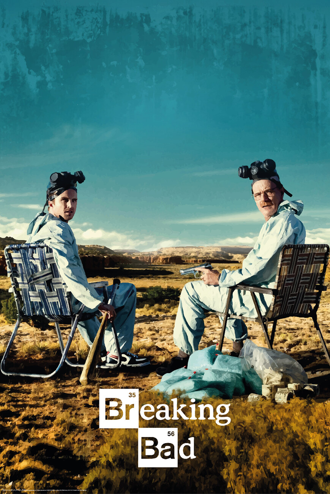
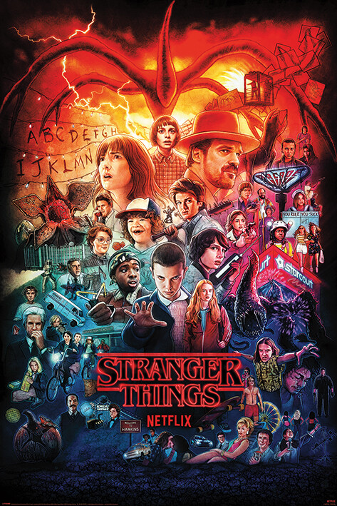
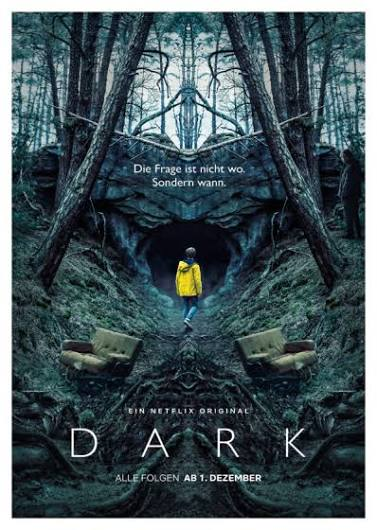
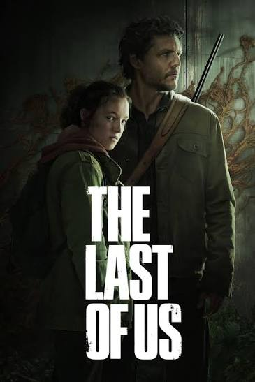

Breaking Bad
Un drama intens sobre la moral, el poder i les conseqüències de traspassar els propis límits.
Descobreix la sèrieDe la química al misteri, dels viatges en el temps a la supervivència. Explora quatre històries, coneix-ne la sinopsi i visita la fitxa oficial d'IMDb.
La nostra selecció

Un drama intens sobre la moral, el poder i les conseqüències de traspassar els propis límits.
Descobreix la sèrie
Aventures, nostàlgia i terror sobrenatural en una petita ciutat plena de secrets.
Descobreix la sèrie
Una història plena de girs que qüestiona la relació entre passat, present i futur.
Descobreix la sèrie
Un viatge de supervivència amb una història humana sobre la confiança i l’afecte.
Descobreix la sèrieLes imatges són il·lustracions originals creades per a aquesta pràctica; no són pòsters oficials.